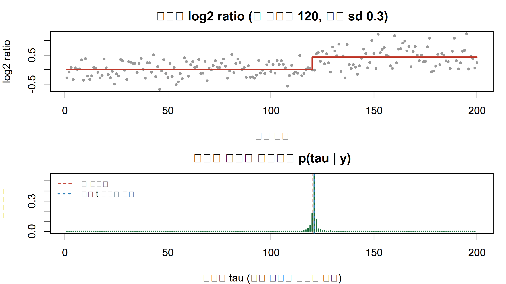
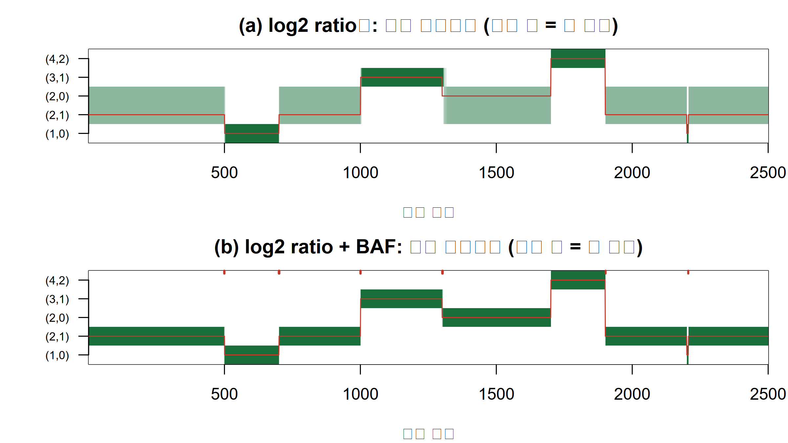

종양 read depth의 log2 ratio와 B 대립유전자 빈도(BAF)로 복제수를 부릅니다. 변화점의 사후분포, HMM 사후 상태확률, FFBS로 경계 불확실성을 직접 계산합니다.
Author
Eunji Ha
Published
September 21, 2026
학습 목표
복제수·소수 대립유전자 복제수·순도로 log2 ratio와 BAF의 기대값을 계산하고, 두 신호가 각각 무엇을 구분하는지 설명할 수 있다.
구간 평균을 적분해 변화점 위치의 사후분포를 정확히 계산하고, 잡음과 경계 불확실성의 관계를 설명할 수 있다.
log2 ratio와 BAF를 합친 방출확률로 복제수 HMM을 구성하고, 사후 상태확률로 판정 보류 구간을 표시할 수 있다.
FFBS로 상태 경로를 사후에서 뽑아 Viterbi 경로 하나로는 얻을 수 없는 변화점 불확실성을 보여 줄 수 있다.
종양 조직과 같은 환자의 혈액을 전장 엑솜(WES)이나 전장 유전체(WGS) 시퀀싱으로 읽었다고 합시다. 게놈을 일정한 구간(bin)으로 나눠 read 수를 세고 정상 대조의 read 수로 나눈 뒤 로그를 취하면 log2 ratio가 나옵니다. 사본을 잃은 구간은 음수, 사본이 늘어난 구간은 양수 쪽으로 움직입니다. 여기에 정상 조직에서 이형접합(heterozygous)인 SNP 위치의 종양 read 중 B 대립유전자를 담은 비율, 곧 B 대립유전자 빈도(B allele frequency, BAF)가 더해집니다. 찾고 싶은 것은 결실(deletion), 증가·증폭(gain, amplification), 그리고 사본 수는 둘 그대로인데 한쪽 부모의 염색체만 남은 복제수 중립 이형접합성 소실(copy-neutral loss of heterozygosity, CN-LOH)입니다. 어려움은 두 가지입니다. 구간 하나의 log2 ratio는 잡음이 커서 혼자서는 거의 아무것도 말하지 못합니다. 여러 구간을 묶어야 하는데 묶음이 어디서 끊기는지, 곧 경계가 불확실합니다. 이번 주는 이 경계 불확실성을 확률로 계산하는 베이지안 분절(segmentation)과 은닉 마르코프 모형(HMM)을 다룹니다. HMM 계산 도구는 W11에서 만든 것을 그대로 씁니다.
기대값의 산수: log2 ratio와 BAF
종양 세포가 어떤 구간에 사본을 CN개 가지고, 그중 적은 쪽 대립유전자의 사본이 m개라고 합시다(소수 대립유전자 복제수, minor allele copy number). 정상 이배체는 (CN, m) = (2, 1)입니다. 종양 세포만 있다면 read depth는 CN/2배이므로 기대 log2 ratio는 \(\log_2(\text{CN}/2)\)이고, B 대립유전자가 소수 쪽이면 BAF는 m/CN, 다수 쪽이면 1 − m/CN입니다. 실제 시료에는 정상 세포가 섞여 있어 순도(purity) \(\rho\)로 두 집단을 섞어야 합니다. 다섯 가지 상태의 기대값을 순도 1과 0.7에서 계산해 봅니다.
# 순도 rho에서 (CN, m) 상태의 기대 log2 ratio와 기대 BAF(소수 쪽 b; 다른 쪽은 1 - b)expected_cn <-function(cn, m, rho =1) { tot <- rho * cn +2* (1- rho) # 종양·정상 혼합의 평균 총 사본 수cbind(log2r =log2(tot /2), baf = (rho * m + (1- rho)) / tot)}states <-data.frame(lab =c("(1,0)", "(2,1)", "(2,0)", "(3,1)", "(4,2)"),name =c("결실", "정상", "CN-LOH", "증가", "증폭"), cn =c(1, 2, 2, 3, 4), m =c(0, 1, 0, 1, 2))tab_exp <-data.frame(paste(states$lab, states$name), round(expected_cn(states$cn, states$m, 1), 3),round(expected_cn(states$cn, states$m, 0.7), 3))names(tab_exp) <-c("상태 (CN,m)", "log2 (순도1)", "BAF b (순도1)", "log2 (순도0.7)", "BAF b (순도0.7)")print(tab_exp, row.names =FALSE)
상태 (CN,m) log2 (순도1) BAF b (순도1) log2 (순도0.7) BAF b (순도0.7)
(1,0) 결실 -1.000 0.000 -0.621 0.231
(2,1) 정상 0.000 0.500 0.000 0.500
(2,0) CN-LOH 0.000 0.000 0.000 0.150
(3,1) 증가 0.585 0.333 0.433 0.370
(4,2) 증폭 1.000 0.500 0.766 0.500
둘째와 셋째 행을 보십시오. (2,1)과 (2,0)은 log2 ratio 기대값이 순도와 상관없이 정확히 0입니다. 사본 수가 같으니 read depth도 같습니다. 둘을 가르는 것은 BAF뿐입니다(순도 0.7에서 0.5 대 0.15). 반대로 (2,1)과 (4,2)는 BAF가 모두 0.5라 BAF로는 구분되지 않고 log2 ratio가 가릅니다. 순도가 1에서 0.7로 내려가면 결실의 log2 ratio가 −1에서 −0.621로, CN-LOH의 BAF가 0에서 0.15로 끌려옵니다. 정상 세포가 섞일수록 모든 신호가 (0, 0.5) 쪽으로 수축합니다.
수식으로 보기: 순도를 반영한 기대값
\[
\mathbb{E}[\text{log2 ratio}] = \log_2\frac{\rho\,\text{CN} + 2(1-\rho)}{2}, \qquad b = \frac{\rho\,m + (1-\rho)}{\rho\,\text{CN} + 2(1-\rho)}, \qquad \mathbb{E}[\text{BAF}] \in \{\,b,\ 1-b\,\}
\] 분모는 종양·정상 혼합의 평균 총 사본 수이고, \(b\)의 분자는 소수 쪽 대립유전자의 평균 사본 수입니다(정상 세포는 1개). 어느 대립유전자가 B인지는 SNP마다 우연히 정해지므로 BAF는 \(b\)와 \(1-b\) 두 곳에 대칭으로 모입니다. \(\rho=1\)이면 \(\log_2(\text{CN}/2)\)와 \(m/\text{CN}\)으로 돌아갑니다. 여기서는 종양이 한 클론이고 시료 전체의 평균 사본 수가 2라고 가정했습니다. 실제 log2 ratio는 시료 평균으로 정규화되므로 배수성(ploidy)이 2가 아니면 0점이 움직입니다.
Tip
log2 ratio는 총 사본 수를, BAF는 두 대립유전자 사본의 불균형을 봅니다. 한쪽 신호만으로는 식별되지 않는 상태 쌍이 반드시 생기므로, 모형이 두 신호를 함께 쓰도록 짜야 합니다.
베이지안 분절: 변화점 하나의 사후분포
구간 200개의 log2 ratio가 어느 지점 \(\tau\)에서 평균이 한 번 바뀐다고 합시다. 빈도주의 접근은 가장 그럴듯한 \(\tau\) 하나를 찾고 변화가 유의한지 검정합니다. 베이지안 접근은 \(\tau = 1, \dots, 199\) 각각에 대해 “경계가 여기일 확률”을 계산합니다. 두 구간의 평균 \(\mu_1, \mu_2\)는 모르지만 관심 대상이 아니므로 정규 사전을 주고 적분해 없앱니다. 정규-정규 켤레(W2) 덕분에 적분이 닫힌 형태라 MCMC 없이 모든 \(\tau\)의 사후확률을 정확히 얻습니다.
log_sum_exp <-function(x) { m <-max(x); m +log(sum(exp(x - m))) } # W9에서 만든 것과 같은 함수seg_logml <-function(s1, s2, len, sigma, v0) # 평균을 적분한 구간의 로그 주변가능도 (d = y - mu0 기준)-0.5* len *log(2* pi * sigma^2) -0.5*log(1+ len * v0 / sigma^2) -0.5* (s2 - v0 * s1^2/ (sigma^2+ len * v0)) / sigma^2cp_posterior <-function(y, sigma, mu0 =0, v0 =1) { # 변화점 tau = 1..n-1 의 사후확률 (균등 사전) n <-length(y); d <- y - mu0; c1 <-cumsum(d); c2 <-cumsum(d^2); tau <-1:(n -1) lm <-seg_logml(c1[tau], c2[tau], tau, sigma, v0) +# 왼쪽 구간 1..tauseg_logml(c1[n] - c1[tau], c2[n] - c2[tau], n - tau, sigma, v0) # 오른쪽 구간 tau+1..nexp(lm -log_sum_exp(lm))}cred_tau <-function(p) c(which(cumsum(p) >=0.025)[1], which(cumsum(p) >=0.975)[1]) # 95% 신용구간set.seed(3)n_cp <-200; tau_true <-120; sd_cp <-0.3; z_cp <-rnorm(n_cp) # 가상의 데이터jump <-unname(expected_cn(3, 1, 0.7)[1, "log2r"]) # 순도 0.7의 한 사본 증가 = 0.433y_cp <-c(rep(0, tau_true), rep(jump, n_cp - tau_true)) + sd_cp * z_cppost_tau <-cp_posterior(y_cp, sd_cp)t_stat <-sapply(1:(n_cp -1), function(k) abs(mean(y_cp[1:k]) -mean(y_cp[-(1:k)])) /sqrt(1/ k +1/ (n_cp - k)))ci <-cred_tau(post_tau)cat(sprintf("사후 최빈 tau = %d (확률 %.3f), 95%% 신용구간 [%d, %d], 최대 t 통계량 위치 = %d\n",which.max(post_tau), max(post_tau), ci[1], ci[2], which.max(t_stat)))
사후 최빈 tau = 121 (확률 0.551), 95% 신용구간 [118, 124], 최대 t 통계량 위치 = 121
par(mfrow =c(2, 1), mar =c(4, 4, 2.5, 1))plot(y_cp, pch =16, cex =0.6, col ="grey60", main ="가상의 log2 ratio (참 변화점 120, 잡음 sd 0.3)",xlab ="구간 번호", ylab ="log2 ratio")lines(c(1, tau_true, tau_true, n_cp), c(0, 0, jump, jump), col ="#c0392b", lwd =2)plot(post_tau, type ="h", col ="#1a6e3c", lwd =2, xlim =c(1, n_cp), main ="변화점 위치의 사후분포 p(tau | y)",xlab ="변화점 tau (왼쪽 구간의 마지막 번호)", ylab ="사후확률")abline(v = tau_true, col ="#c0392b", lty =2); abline(v =which.max(t_stat), col ="#2c7fb8", lty =3, lwd =2)legend("topleft", c("참 변화점", "최대 t 통계량 위치"), col =c("#c0392b", "#2c7fb8"), lty =c(2, 3), lwd =c(1, 2), bty ="n", cex =0.8)

사후 최빈값은 121(확률 0.55)이고 95% 신용구간은 118~124입니다. 사후가 참 변화점 근처 몇 개 구간에 퍼져 있으며, 이 폭이 곧 경계의 불확실성입니다. 한 사본 증가의 차이 0.433이 잡음 sd 0.3과 비슷한 크기라 구간 한두 개로는 경계를 못 박습니다. 잡음을 두 배로 키우면 이 분포가 어떻게 되는지는 연습문제 3에서 봅니다.
CBS(circular binary segmentation, Olshen et al. 2004)는 위의 최대 t 통계량을 원형으로 확장하고 순열 검정으로 변화점의 유무를 판정한 뒤, 이를 재귀적으로 반복해 여러 변화점을 찾습니다. 결과는 경계의 점추정과 p-value이지 “경계가 이 위치일 확률”이 아닙니다. 위 그림의 파란 점선 하나와 초록 막대 분포의 차이가 바로 그것입니다. 변화점이 여러 개일 때도 사후분포를 정확히 계산하는 재귀 알고리즘이 있습니다(Fearnhead 2006). 이번 주는 그 대신 분절마다 정해진 상태를 두는 HMM으로 넘어갑니다.
HMM으로 복제수 상태 추론
실제 염색체에는 변화점이 여러 개 있고, 각 분절은 몇 가지 정해진 상태 중 하나입니다. 이 구조를 그대로 옮긴 것이 복제수 HMM입니다(array CGH에 적용한 Fridlyand et al. 2004, log R ratio와 BAF를 함께 쓴 PennCNV의 Wang et al. 2007). 숨은 상태 \(z_t\)는 구간 \(t\)의 (CN, m)이고 관측은 log2 ratio \(x_t\)와, 이형접합 SNP가 있으면 BAF \(b_t\)입니다. W11의 염색질 상태 HMM과 달라지는 것은 방출확률뿐입니다.
방출: \(x_t \sim \mathcal{N}(\mu_k, \sigma^2)\), \(\mu_k\)는 위 표의 기대 log2 ratio입니다. BAF가 관측된 구간은 \(b_t \sim \tfrac12\mathcal{N}(b_k, s^2) + \tfrac12\mathcal{N}(1-b_k, s^2)\)을 곱합니다(로그로는 더합니다). 이형접합 SNP가 없는 구간은 BAF 항이 0입니다. 상태가 주어지면 두 관측이 독립이라고 가정한 것입니다.
전이: 끈적한(sticky) 전이입니다. 자기전이 \(1-\varepsilon\), 나머지 상태로 \(\varepsilon/(K-1)\)씩 갑니다. 한 상태에 머무는 길이는 평균 \(1/\varepsilon\) 구간인 기하분포이므로, \(\varepsilon\)는 분절 길이에 대한 사전 믿음입니다.
작은 수치 예로, log2 ratio 0.05와 BAF 0.17이 관측된 구간 하나의 로그 방출과 (균등 사전에서의) 상태 확률을 계산해 봅니다.
log2 ratio만 보면 (2,1)과 (2,0)이 정확히 같은 확률(각 0.386)을 나눠 가집니다. BAF 하나가 더해지자 (2,1)은 사실상 0이 되고 (2,0)이 0.943을 가져갑니다. BAF 0.17은 0.5에서 잡음 sd의 다섯 배 넘게 떨어져 있기 때문입니다. 나머지 0.057 중 0.053은 기대 BAF가 0.231로 가까운 결실 (1,0)의 몫입니다. HMM은 이런 구간별 증거를 끈적한 전이로 이웃과 묶습니다.
수식으로 보기: 방출, 전이, 전방-후방과 FFBS
\[
\log p(x_t, b_t \mid z_t = k) = \log\mathcal{N}(x_t;\mu_k,\sigma^2) + h_t \log\!\left[\tfrac12\mathcal{N}(b_t; b_k, s^2) + \tfrac12\mathcal{N}(b_t; 1-b_k, s^2)\right], \qquad A_{jk} = \begin{cases} 1-\varepsilon & j = k \\ \varepsilon/(K-1) & j \ne k \end{cases}
\]\(h_t\)는 구간 \(t\)에 이형접합 SNP가 있으면 1, 없으면 0입니다. 척도화 전방 변수 \(\hat\alpha_t(k) = p(z_t = k \mid y_{1:t})\)와 후방 변수로 사후 상태확률 \(\gamma_t(k) = p(z_t = k \mid y_{1:T})\)를 얻는 것은 W11과 같습니다(Rabiner 1989). FFBS(forward filtering, backward sampling; Chib 1996, Scott 2002)는 마르코프 성질에서 나오는 분해 \[
p(z_{1:T} \mid y) = p(z_T \mid y_{1:T}) \prod_{t=1}^{T-1} p(z_t \mid z_{t+1}, y_{1:t}), \qquad p(z_t = k \mid z_{t+1}, y_{1:t}) \propto \hat\alpha_t(k)\, A_{k, z_{t+1}}
\] 를 이용해 \(z_T \sim \hat\alpha_T\)를 뽑고 \(t = T-1, \dots, 1\) 순서로 한 칸씩 거슬러 뽑습니다. 결과는 상태 경로 전체의 사후 표본입니다. 여기서는 \(\mu_k, \sigma, s, \varepsilon\)를 고정했으므로 모수가 주어졌을 때의 사후입니다.
실습: base R로 직접 구현
(1) 가상의 데이터: 한 염색체 팔
한 염색체 팔 크기의 가상의 데이터를 만듭니다. 구간 2,500개, 순도 0.7, log2 ratio 잡음 sd 0.3, 구간의 약 35%에만 이형접합 SNP가 하나씩 있다고 둡니다. BAF는 read depth 60에서 이항분포로 뽑아, 모형의 정규 방출이 근사라는 점도 남겨 둡니다. 분절은 정상 → 결실 → 정상 → 증가(3,1) → CN-LOH → 증폭(4,2) → 정상이고, 마지막 정상 구간 안에 6구간짜리 짧은 초점 결실(focal deletion)을 하나 넣습니다.
pal <-colorRampPalette(c("white", "#1a6e3c"))(50); par(mfrow =c(2, 1), mar =c(4, 4.5, 2.5, 1))for (f inlist(list(fb_a, "(a) log2 ratio만"), list(fb_b, "(b) log2 ratio + BAF"))) {image(1:n_bin, 1:n_k, f[[1]]$post, col = pal, zlim =c(0, 1), yaxt ="n",main =paste0(f[[2]], ": 사후 상태확률 (빨간 선 = 참 상태)"), xlab ="구간 번호", ylab ="")axis(2, at =1:n_k, labels = states$lab, las =1, cex.axis =0.7); lines(z_true, col ="#c0392b", lwd =1)}rug(unc, side =3, col ="#c0392b", lwd =2) # (b)의 판정 보류 구간

(a)에서는 CN-LOH 구간뿐 아니라 모든 정상 구간에서 (2,1)과 (2,0)의 사후확률이 반씩 갈립니다. 모형이 “둘 중 무엇인지 모른다”고 정직하게 말하는 것입니다. 그런데 Viterbi는 동률에서 앞 번호 상태를 고르므로 LOH를 한 구간도 (2,0)로 부르지 않고, 경로만 보면 그 모름이 사라집니다. BAF를 더한 (b)는 LOH 구간의 99% 이상을 (2,0)로 부르고(LOH 호출률 0.993) 평균 사후 P(2,0)도 0.995입니다. 표의 정확도는 전체 구간 중 Viterbi 상태가 참 상태와 같은 비율입니다. 판정 보류 구간 12개는 전부 분절 경계 바로 옆에 있습니다(위쪽 빨간 눈금).
(4) FFBS: 경로 전체를 사후에서 뽑기
사후 상태확률은 구간마다 따로 본 주변확률이라 “경계가 어디인가”라는 경로 수준의 질문에는 바로 답하지 못합니다. FFBS로 경로 200개를 뽑아 두 경계의 위치 분포를 봅니다. 결실→정상(700/701)과 증가→CN-LOH(1300/1301)입니다.
# 이 챕터에서 새로 만드는 함수: 전방 필터링 후 뒤에서부터 상태를 하나씩 표집 (Chib 1996; Scott 2002)ffbs <-function(log_emis, trans, init, n_draw) { n <-nrow(log_emis); k <-ncol(log_emis); emis <-exp(log_emis -apply(log_emis, 1, max)) alpha <-matrix(0, n, k); a <- init * emis[1, ]; alpha[1, ] <- a /sum(a)for (t in2:n) { a <- (alpha[t -1, ] %*% trans) * emis[t, ]; alpha[t, ] <- a /sum(a) } # 전방 필터링 low <-lower.tri(diag(k), diag =TRUE) *1# 누적합을 행렬곱으로 paths <-matrix(0L, n_draw, n); paths[, n] <-sample.int(k, n_draw, replace =TRUE, prob = alpha[n, ])for (t in (n -1):1) { # 후방 표집: alpha_t(k) * A[k, z_(t+1)] 에 비례 p <- alpha[t, ] * trans[, paths[, t +1], drop =FALSE] # k x n_draw (열마다 비정규화 확률) cum <- low %*% p; u <-runif(n_draw) * cum[k, ] paths[, t] <-colSums(cum <rep(u, each = k)) +1L } paths}set.seed(7); paths <-ffbs(le_b, tr, init, 200)freq <-sapply(1:n_k, function(k) colMeans(paths == k)) # 표본 빈도 vs 전방-후방 사후확률cat("FFBS 빈도와 사후 상태확률의 최대 차이:", round(max(abs(freq - fb_b$post)), 3), "\n")
FFBS 빈도와 전방-후방 사후 상태확률의 차이는 최대 0.05로, 경로 200개의 몬테카를로 오차(확률 0.5에서 표준오차 약 0.035) 수준이라 표집기가 맞게 작동합니다. 증가→CN-LOH 경계에서 Viterbi는 1303 하나를 내놓지만, 사후 경로들은 1298~1303에 퍼져 있고 참 경계 1300은 그 안에 있습니다(200개 중 17개). log2 차이가 0.433으로 작고 BAF는 구간의 35%에만 있기 때문입니다. 초점 결실(6구간)을 포함한 경로의 비율 0.975는 그 결실이 실재할 사후확률의 추정치입니다. 이 두 숫자, 경계의 분포와 짧은 사건의 존재 확률이 Viterbi 경로 하나로는 얻을 수 없는 베이지안 산출물입니다.
\(\varepsilon = 0.1\)은 분절이 평균 10구간이라는 사전 믿음이라 잡음을 분절로 오인해 13개로 과분할합니다. \(\varepsilon = 10^{-4}\)는 평균 10,000구간이라 6구간짜리 초점 결실을 Viterbi가 통째로 삼킵니다. 그런데도 같은 설정에서 그 6구간의 사후 P(결실) 평균은 0.36으로 0이 아닙니다. 경로 하나는 “없다”고 하지만 사후는 “셋에 하나쯤은 있다”고 말합니다. loglik은 상태 경로를 모두 합산한 \(p(y \mid \varepsilon)\), 곧 \(\varepsilon\)의 주변가능도이므로 (W7의 경험적 베이즈처럼) \(\varepsilon\) 선택의 근거로 쓸 수 있고, 여기서 비교한 네 값 중에서는 \(10^{-3}\)이 가장 큽니다(참 경로는 이웃 구간 사이 2,499번의 이동 중 8번만 상태를 바꾸므로 참 변화율은 약 0.003입니다).
Warning
CNV calling에서 흔한 함정.
GC 함량·매핑 가능성(mappability) 보정 없이 log2 ratio 쓰기. read depth는 GC 함량과 매핑 가능성에 따라 체계적으로 물결칩니다. 보정하지 않으면 이 물결이 가짜 증가·결실 분절로 불립니다. HMMcopy의 correctReadcount()가 이 단계입니다.
순도와 배수성의 비식별성. log2 ratio는 시료 평균 대비 값이라, 순도 0.5인 이배체 종양의 한 사본 결실과 순도 1인 사배체 종양의 CN 3 구간이 둘 다 \(\log_2 0.75 = -0.415\)를 줍니다. 이 경우는 기대 BAF도 둘 다 1/3이라 구간 하나로는 가를 수 없습니다. 게놈 전체 구간의 (log2 ratio, BAF)가 정수 사본 수에 가장 잘 맞는 (순도, 배수성)을 함께 찾아야 하며, ASCAT(Van Loo et al. 2010)이 BAF와 log2 ratio를 함께 써서 하는 일이 이것입니다. 그래도 비슷하게 잘 맞는 해가 여럿 남을 수 있습니다. 이번 실습은 순도 0.7을 알고 있다고 가정했습니다.
정상 대조군 선택. 대조군의 포획 효율이나 배치가 종양과 다르면 그 차이가 log2 ratio에 그대로 들어갑니다. 짝지은 정상 시료가 없으면 여러 정상 시료로 만든 기준을 씁니다.
잡음 \(\sigma\)를 고정한 가정. 실제 잡음은 시료·구간마다 다르고 꼬리가 두껍습니다. \(\sigma\)를 작게 잡으면 과분할, 크게 잡으면 과소분할됩니다. 모수까지 사후에서 뽑으려면 FFBS와 모수 갱신을 번갈아 돌리는 깁스 표집(Chib 1996; Scott 2002)으로 확장합니다.
Viterbi 경로 하나만 보고하기. 위에서 본 것처럼 경계의 폭, 식별되지 않는 상태(log2만 쓴 경우의 (2,1)/(2,0)), 짧은 사건의 불확실성이 모두 사라집니다. 사후 상태확률과 판정 보류 구간을 함께 보고하십시오.
실습: 패키지로 풀기
CI 환경에 아래 패키지가 없어 실행하지 않습니다. DNAcopy는 CBS를, HMMcopy(Ha et al. 2012)는 GC·매핑 가능성 보정과 HMM 분절을 제공합니다.
cat("CN3 필요 구간 배수 (순도1 차이 / 순도0.6 차이)^2 =", round((e1[2, 1] / e06[2, 1])^2, 2), "\n")
CN3 필요 구간 배수 (순도1 차이 / 순도0.6 차이)^2 = 2.39
순도 0.6에서 결실은 −1에서 −0.515로, 증가는 0.585에서 0.379로 0 쪽으로 수축합니다. BAF도 결실은 0에서 0.286으로, 증가는 0.333에서 0.385로 0.5 쪽으로 다가갑니다. 평균 차이 \(\Delta\)를 \(n\)개 구간으로 판정하는 통계량은 \(\Delta\sqrt{n}/\sigma\)에 비례하므로, 같은 확신을 얻으려면 구간이 \((0.585/0.379)^2\), 곧 약 2.4배 필요합니다. 순도가 낮을수록 짧은 증가·결실은 잡음에 묻힙니다.
문제 2. 이형접합 SNP 밀도와 CN-LOH 검출
실습 데이터에서 BAF 관측을 무작위로 지워 이형접합 SNP가 있는 구간의 비율을 35%, 5%, 1%, 0.2%로 줄여 가며 모형 (b)를 다시 적합하십시오. LOH 구간의 평균 사후 P(2,0), LOH 구간 중 판정 보류(최대 사후확률 < 0.95) 수, 정상 구간의 평균 사후 P(2,1)을 비교하십시오.
SNP 구간 비율 LOH 안 SNP 수 LOH P(2,0) LOH 판정보류 정상 P(2,1)
0.350 153 0.995 3 0.999
0.050 28 0.995 3 0.998
0.010 8 0.980 15 0.990
0.002 1 0.949 116 0.603
LOH 구간은 양쪽이 log2 ratio가 다른 증가와 증폭으로 막혀 있어 경계가 log2로 정해집니다. 그래서 SNP 몇 개만 있어도 끈적한 전이가 그 증거를 분절 전체로 퍼뜨려, LOH 안의 SNP가 하나뿐인 0.2%에서도 평균 P(2,0)가 0.949입니다. 그러나 판정 보류 구간은 1%에서 15개, 0.2%에서 116개로 늘어납니다. 더 눈에 띄는 것은 정상 구간입니다. SNP가 거의 없으면 정상 구간도 (2,1)인지 (2,0)인지 가릴 근거가 사라져 P(2,1)이 0.999에서 0.603으로 내려갑니다. 정상 구간 사이에 낀 CN-LOH라면 log2가 경계를 알려 주지 않으므로 경계 자체가 이웃한 SNP 사이 어딘가로 흐려집니다. WES나 표적 패널처럼 이형접합 SNP가 드문 데이터에서 CN-LOH 검출이 어려운 이유 중 하나입니다.
문제 3. 잡음을 두 배로 하면 경계는 얼마나 흐려지는가
단일 변화점 예에서 같은 표준정규 잡음 z_cp를 쓰되 sd를 0.3에서 0.6으로 두 배로 해, 사후 최빈값과 95% 신용구간의 폭을 비교하십시오.
풀이
res_cp <-t(sapply(c(0.3, 0.6), function(s) { y <-c(rep(0, tau_true), rep(jump, n_cp - tau_true)) + s * z_cp p <-cp_posterior(y, s); ci <-cred_tau(p)c(sd = s, map =which.max(p), p_map =round(max(p), 3), lower = ci[1], upper = ci[2], width =diff(ci))}))print(res_cp)
잡음이 두 배가 되면 95% 신용구간의 폭이 6에서 38로 여섯 배 남짓 넓어지고, 최빈값은 143으로 참값에서 멀어지며 그 확률도 0.551에서 0.141로 떨어집니다. 경계 근처에서 로그 사후는 \(|\tau - \tau^*|\)에 대략 선형으로 떨어지고 그 기울기가 \(\Delta^2/\sigma^2\)에 비례하므로, \(\sigma\)가 두 배면 기울기는 넷으로 나뉘어 경계 폭이 대략 네 배로 커지는 것이 기본 척도입니다. 실제 폭은 잡음 실현값에 따라 이보다 더 흔들립니다. 점추정 하나만 보고하면 이 차이가 보이지 않습니다.
구간 평균을 정규 사전으로 적분하면 변화점 위치의 사후분포를 누적합만으로 정확히 계산할 수 있습니다. 신용구간의 폭이 경계 불확실성이며, CBS의 점추정과 p-value는 이것을 주지 않습니다.
복제수 HMM은 상태 (CN, m), log2와 BAF의 로그 방출을 더한 log_emis, 끈적한 전이로 구성되고, W11의 forward_backward와 viterbi를 그대로 씁니다. log2만 쓰면 CN-LOH의 사후는 반반으로 갈리고 BAF를 더해야 결정됩니다.
사후 상태확률로 판정 보류 구간을 표시하고, ffbs로 뽑은 경로로 경계 위치의 분포와 짧은 사건의 존재 확률을 보고합니다. Viterbi 경로 하나는 이 불확실성을 지웁니다.
전이 \(\varepsilon\)는 분절 길이의 사전 믿음입니다. 크면 과분할, 작으면 짧은 사건을 놓치며, 전방 알고리즘의 로그가능도가 \(\varepsilon\)의 주변가능도라 선택 근거가 됩니다. 실제 데이터에서는 GC·매핑 가능성 보정과 순도·배수성 추정이 먼저입니다.
다음 시간
마지막 W13은 캡스톤입니다. 질문 정하기, 사전예측검사, 적합, 수렴 진단, 사후예측검사, 민감도 분석, 보고로 이어지는 베이지안 워크플로우를 단일세포 세포유형 비율 예제 하나로 처음부터 끝까지 따라가고, 자기 데이터에 쓸 모델 점검 체크리스트로 정리합니다. 이번 주에 본 \(\varepsilon\) 민감도나 Viterbi 경로 대 사후 불확실성 같은 문제는 그 체크리스트의 민감도 분석과 보고 항목에 해당합니다.